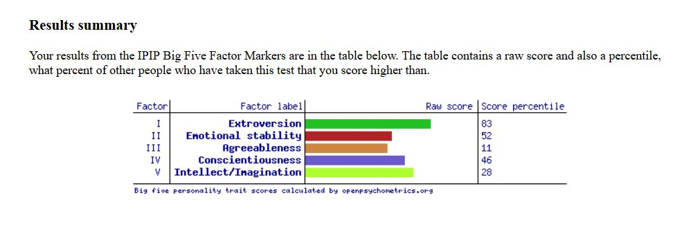
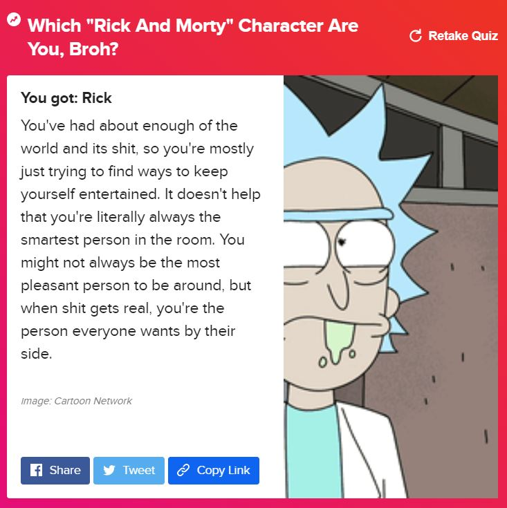
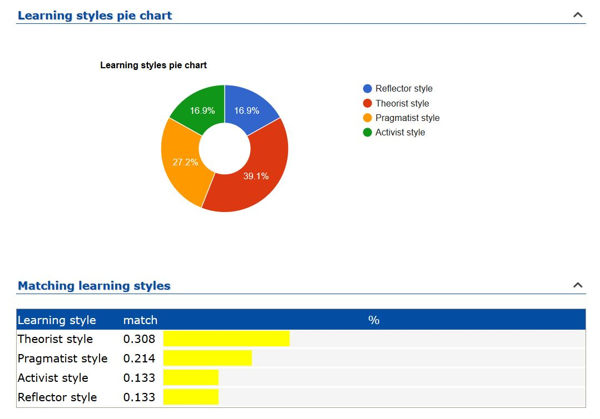

Myers-Briggs Type Indicator
COMMANDER ENTJ-A
I am extremely happy to find out I have the Commander(ENTJ-A) personality as many tech icons have this personality type including Bill Gates and Steve Jobs.
Strengths
Efficient – Commanders see inefficiency not just as a problem in its own right, but as something that pulls time and energy away from all their future goals, an elaborate sabotage consisting of irrationality and laziness. People with the Commander personality type will root out such behaviour wherever they go.
Energetic – Rather than finding this process taxing Commanders are energized by it, genuinely enjoying leading their teams forward as they implement their plans and goals.
Self-Confident – Commanders couldn’t do this if they were plagued by self-doubt – they trust their abilities, make known their opinions, and believe in their capacities as leaders.
Strong-Willed – Nor do they give up when the going gets tough – Commander personalities strive to achieve their goals, but really nothing is quite as satisfying to them as rising to the challenge of each obstacle in their run to the finish line.
Strategic Thinkers – Commanders exemplify the difference between moment-to-moment crisis management and navigating the challenges and steps of a bigger plan, and are known for examining every angle of a problem and not just resolving momentary issues, but moving the whole project forward with their solutions.
Charismatic and Inspiring – These qualities combine to create individuals who are able to inspire and invigorate others, who people actually want to be their leaders, and this, in turn, helps Commanders to accomplish their often ambitious goals that could never be finished alone.
Weaknesses
Stubborn and Dominant – Sometimes all this confidence and willpower can go too far, and Commanders are all too capable of digging in their heels, trying to win every single debate and pushing their vision, and theirs alone.
Intolerant – “It’s my way or the highway” – People with the Commander personality type are notoriously unsupportive of any idea that distracts from their primary goals, and even more so of ideas based on emotional considerations. Commanders won’t hesitate a second to make that fact clear to those around them.
Impatient – Some people need more time to think than others, an intolerable delay to quick-thinking Commanders. They may misinterpret contemplation as stupidity or disinterest in their haste, a terrible mistake for a leader to make.

Arrogant – Commander personalities respect quick thoughts and firm convictions, their own qualities, and look down on those who don’t match up. This relationship is a challenge for most other personality types who are perhaps not timid in their own right, but will seem so beside overbearing Commanders.
Poor Handling of Emotions – All this bluster, alongside the assumed supremacy of rationalism, makes Commanders distant from their own emotional expression and sometimes downright scornful of others’. People with this personality type often trample others’ feelings, inadvertently hurting their partners and friends, especially in emotionally charged situations.
Cold and Ruthless – Their obsession with efficiency and unwavering belief in the merits of rationalism, especially professionally, makes Commanders incredibly insensitive in pursuing their goals, dismissing personal circumstances, sensitivities, and preferences as irrational and irrelevant.
Big 5 Personality
In terms of my results for the Big Five personality traits test, I scored high in Extroversion, moderate in Emotional stability and Conscientiousness and low on Intellect/Imagination and Agreeableness.
These results show some consistency with the results of the Myers Briggs test as they show that I have good leadership abilities and it also shows that I work well in a group situation, as I enjoy being with people and working with them.

Which Rick & Morty Character Am I?

Need I say more?
What do these results mean for me?
My Myers Briggs test result shows me to have a Commander personality type. This shows that I am efficient and energetic, these are good traits as they put me in a position to work in the best and most streamlined manner and I am energised by being able to implement my plans and goals. I am also strong-willed and don’t give up, I find rising to challenges very satisfying. Having this personality type allows me to be able to take charge and control any project well. My ability to be a strategic thinker allows me to solve problems by looking at the different angles of the problem and move a project forward.
How I think these results may influence my behaviour in a team
As my personality type is charismatic and inspiring, I am well suited to leading a team in such a manner that we are able to complete the type of goal together that one could not accomplish on your own. I am a good judge of different personalities and that would assist me in putting the correct group of people together where we are able to each use our relevant skills in order to reach our common goal. Although I can be quite domineering, I need to keep an open mind towards the ideas of the other team members in a team situation so that the best possible result is achieved in completing a project.
How I should take this into account when forming a team
When forming a team, the different aspects of a project should be allocated to someone who is suitable for that particular task. In a team situation, I should take each members strengths and abilities into account and use the necessary care and discretion when dealing with other personality types.
